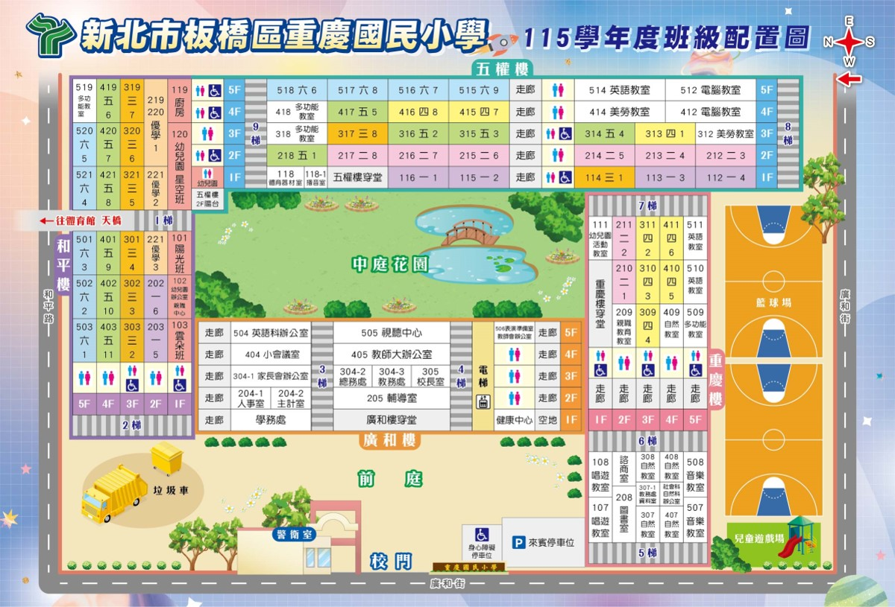

載入重慶國小 3D 實景模型中…
0%
115 學年度・全校 148 處空間與雙面走廊門牌
☰ 校園導覽與路線
步驟 1/5
408 自然教室 · 102m
◀
▶
📋 步驟
✕
準備出發…
📏 測距模式已啟用：請在 3D 場景點擊兩個位置量測距離（
等待第一點
）
清除
廣和樓・3F・行政處室
305
校長室
動線：近 4梯・電梯
◀
▶
🚶 進教室
🧭 怎麼走
🦅 鳥瞰
🔗 分享
✕
📍 校園戶外
👕 運動服
👤 第三人稱
✕ 退出
WASD
移動
Shift
跑步
滑鼠拖曳／點擊轉頭・滾輪調距
F
/ 點門開關門
C
換裝
V
切換人稱
E
/
Q
梯口上下樓
Esc
退出
導覽第 1 / 7 站
✕
廣和街 31 號主校門
◀ 上一站
⏸ 暫停輪播
下一站 ▶
滑鼠拖曳可隨時自由檢視
新北市板橋區重慶國小 115 學年度班級配置圖
官方核對基準｜點圖片可放大／縮回
↗ 學校官網原頁
✕
